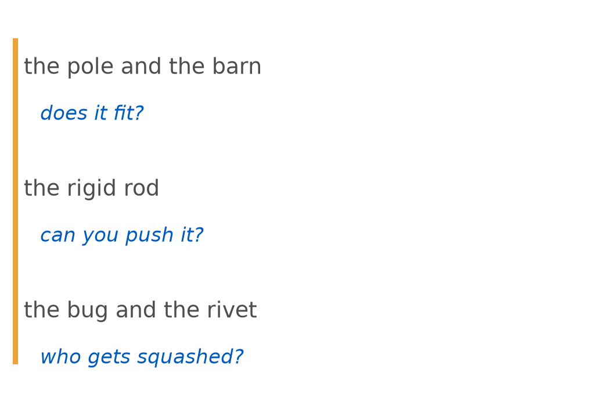
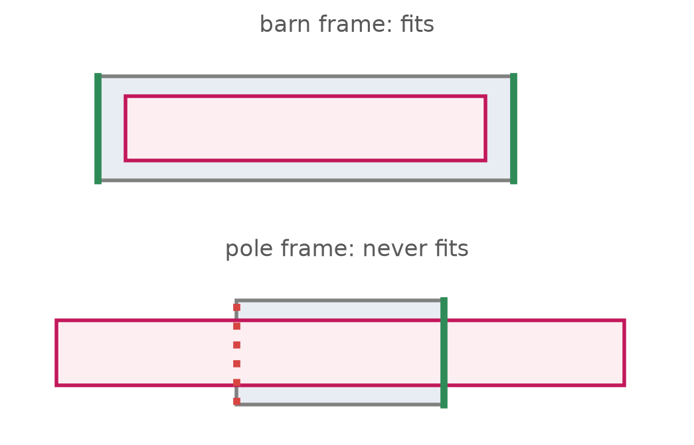
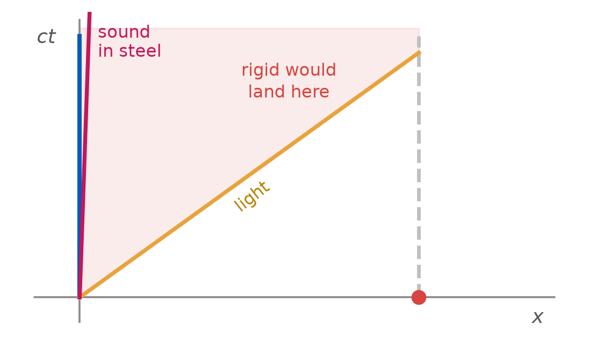
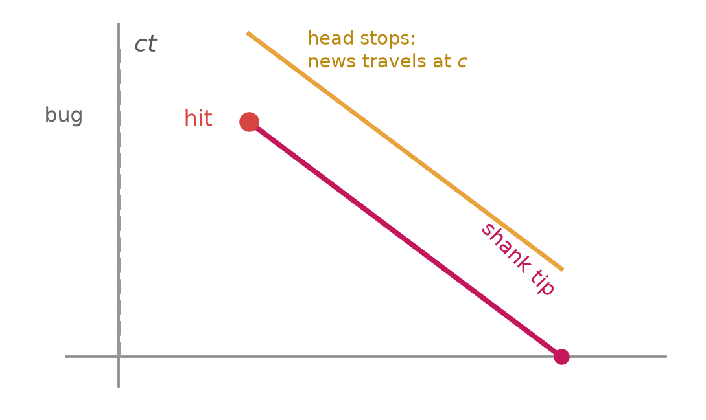

PHY 208 · Special Relativity · Lecture 10
2026-09-24
Presentations start today: Michelson, Bradley, Rømer. 8 minutes each, then 4 of questions.
One question per presentation — UB Learns → Discussions → Audience questions, posted while they present. Three lowest dropped.
Notebook entry from Tuesday’s hyperbola demo due 11:00 today. Prep check 5 due Tue 10:30 — the twin paradox, which we did Tuesday. Milestone 1 due Fri Oct 2.
Three presentations, 12 minutes each.
| group | exercise | |
|---|---|---|
| 1 | Michelson | TW 3-12 — the interferometer, worked at the board |
| 2 | Bradley | TW 3-9 — stellar aberration |
| 3 | Rømer | TW 3-7 — the moons of Jupiter, and the first speed of light |
8 minutes at the board, then 4 minutes of questions — the questions carry the grade.
Everyone else: one question per presentation, in that group’s UB Learns topic.
Two events on the same invariant hyperbola: what do they share, and what does the page distance tell you?
They share the interval from the origin, so a clock riding to either one reads the same. Page distance tells you nothing physical.
Tuesday’s twin was resolved by a bend in a worldline. You could see it.
Today: three paradoxes with no acceleration at all. Nobody turns around, every observer coasts.
So what is left to break the symmetry?

A 20 m pole runs through a 10 m barn at \(\gamma = 2\).
Barn frame · the pole is 10 m, so it fits, and both doors could shut for an instant. Pole frame · the barn is 5 m, so it never fits.
This is the L06 tunnel, renamed. You voted on it, and (d) was correct.

“Fits” means both ends inside at the same time. That is a simultaneity claim, not an event — so frames may disagree, and no door ever touches the pole.
A steel rod, one light-second long. You push the near end.
When does the far end move?
Not immediately, and not at \(c\) either. The push travels as a compression wave, at the speed of sound in steel — about \(5{,}000\) m/s.

A truly rigid body would move its far end at the moment you pushed — outside the light cone. So perfectly rigid bodies cannot exist: rigidity is a signal travelling, and signals obey \(c\).
A bug sits at the bottom of a hole 1 cm deep. A rivet with a 1 cm shank falls in fast enough that \(\gamma = 2\).
Rivet frame · the hole is contracted to 0.5 cm, so the shank reaches the bug. Bug frame · the shank is contracted to 0.5 cm, so it stops 0.5 cm short.
(a) No — in the bug’s frame the shank is too short, and the bug’s frame is the one it lives in
(b) Yes — and the two frames disagree about when the shank reached it, not whether
(c) It depends which frame you ask, exactly as with the pole and the barn
(d) No — the rivet head stops on the surface, and nothing can move after that
The pole and barn asked “does it fit?” — a statement about two events at once, so frames disagree and nothing happens.
The bug asks “is the bug hit?” — one event, at one place. Every frame agrees on that, or the theory is broken.

The head stopping is news, and it cannot reach the tip faster than \(c\). The tip is still moving when it arrives at the bug: squashed, in every frame.
In pairs, ten minutes. For each, decide: is the disputed thing an event (frames must agree) or a claim about two events at once (frames may disagree)? Then say what actually happens.
| the claim | event or simultaneity? | |
|---|---|---|
| 1 | “The pole fits inside the barn” | simultaneity — frames disagree, nothing is struck |
| 2 | “The bug is squashed” | ? |
| 3 | “The two doors shut together” | ? |
| 4 | “The far end of the rod started moving” | ? |
Row 1 is done for you. Match the reasoning, then do 2, 3 and 4. Stuck on one \(\to\) hand up.
| ask this | if the answer is | then |
|---|---|---|
| Is the disputed thing one event? | yes | every frame agrees it happens |
| Does the claim contain “at the same time”? | yes | frames may disagree, and nothing breaks |
| Does it need a signal to arrive? | yes | it travels at \(c\) or slower, never instantly |
Every paradox in special relativity is one of these three, and none of them is a contradiction. They are places where Newtonian habits are still running.
| Presentations | four groups — Poincaré, Fizeau, Maxwell, Fresnel |
| The problem | \(\sum m\vec{v}\) cannot be conserved in every frame |
| What replaces it | and where \(E = \gamma mc^{2}\) comes from |
| Prep check 6 | due Tue Oct 6 10:30 — momentum, energy, LIGO |
| PS 4 | due Sun Sep 27 |
A classmate says: “The bug is only squashed in the rivet’s frame. In its own frame it is fine.”
On UB Learns, under Quizzes. Due 11:59 tonight.
Not graded, ever — I read these to decide what to spend class time on. “I don’t follow this, and here is where I lost it” is a useful answer.
PHY 208 — Paradoxes and Their Resolutions Tim Thomay · University at Buffalo · Fall 2026
Course material licensed CC BY-SA 4.0
Images retain their original licenses — see img/CREDITS.md